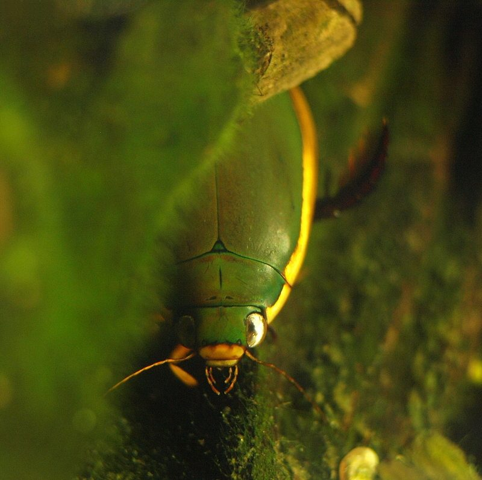

थ्री-स्पॉटेड डाइविंग बीटलThree-spotted Diving Beetle
Cybister tripunctatus · Dytiscidae · INS-0265

- Scientific name वैज्ञानिक नाम
- Cybister tripunctatus (Olivier, 1795)
- Family कुल
- Dytiscidae
- Hindi हिंदी
- थ्री-स्पॉटेड डाइविंग बीटल
- Local names स्थानीय नाम
- three spotted diving beetle
- Status here यहाँ की स्थिति
- native
- Movement आवागमन
- Resident, here all year
- Known from कहाँ दर्ज
- Others have published records from the wider Awadh–Purvanchal plain, none yet from Basti–Ayodhya अवध–पूर्वांचल से दूसरों के प्रकाशित अभिलेख, बस्ती–अयोध्या से अभी नहीं
- IUCN IUCN
- not evaluated
- Review समीक्षा
- not yet reviewed
When to look कब देखें
Present all year. साल भर मौजूद।
थ्री-स्पॉटेड डाइविंग बीटल / Three-spotted Diving Beetle
Cybister tripunctatus (Olivier, 1795) — Dytiscidae
थ्री-स्पॉटेड डाइविंग बीटल — पोखर, तालाब और धान के खेतों के ठहरे पानी में रहने वाला एक बड़ा, चिकना और शिकारी जलीय भौंरा है। इसकी पीठ गहरे काले-हरे रंग की होती है जिसके दोनों किनारों पर पीली-नारंगी पट्टी होती है। इसकी पिछली टांगें चप्पू जैसी चौड़ी और बालों से ढकी होती हैं जिनसे यह पानी में बहुत तेज तैरता है। इसके लार्वा और वयस्क दोनों पानी के छोटे कीड़ों, मच्छरों के लार्वा और मेंढक के बच्चों का शिकार करते हैं।
Quick Identification त्वरित पहचान
| Feature | Description |
|---|---|
| Body outline | Large, broadly oval, streamlined, highly hydrodynamic body adapted for diving |
| Dorsal coloration | Dark greenish-black to brownish-black elytra with a conspicuous pale yellowish-rufous lateral border |
| Hind legs | Broadly flattened, oar-like metathoracic legs densely fringed with long swimming setae |
| Pronotum | Smooth, transverse pronotum with pale yellow lateral borders continuous with elytral margins |
| Respiration | Periodic surfacing to trap atmospheric air bubble beneath the elytra at water surface |
Large, streamlined aquatic beetle recognized by its smooth greenish-black elytra bordered by distinct yellowish lateral margins and broad, oar-like hind legs fringed with stiff swimming hairs. It swims with rapid, simultaneous kicks of both hind legs.
Field tip: Look around outdoor lights near village ponds at night during monsoon showers, where dispersing adult beetles frequently land.
हिंदी: चिकना और चपटा जल-कीड़ा जिसकी काली-हरी पीठ के दोनों तरफ पीली धारी होती है। इसकी पिछली टांगें नाव के चप्पू जैसी होती हैं जिनसे यह पानी में तैरता है। बरसात में यह रात को रोशनी के पास उड़कर आता है।
Morphology आकारिकी
Biometrics from open entomological literature:
| Feature | Characteristic | Source |
|---|---|---|
| Body form | Broadly oval, dorsoventrally compressed, strongly streamlined hydrodynamic contour | Literature |
| Elytral pattern | Dark olivaceous-black surface with bright yellow-orange marginal stripe along lateral edges | Literature |
| Swimming legs | Hind legs greatly modified into flattened swimming paddles with dense rows of natatorial hairs | Literature |
| Larval head | Large prognathous head armed with prominent, curved, hollow sickle-shaped mandibles | Literature |
| Typical dimension | Measurement not available in consulted open sources. | Open sources |
The adult beetle is compact, broadly oval, and polished smooth to minimize hydrodynamic drag while swimming. The head is partially retracted into the transverse pronotum. The antennae are slender and filiform. The forelegs in males feature dilated tarsal segments forming suction cups used to hold females during mating. The hind legs are robust, elongated, and flattened into efficient swimming paddles. Larvae are slender, spindle-shaped predators possessing sickle-like piercing mandibles through which digestive enzymes are injected into prey.
हिंदी: इसका शरीर पानी में तेजी से तैरने के लिए चिकना और नाव जैसा सुडौल होता है। नर भौंरे की अगली टांगों पर पकड़ने वाले चूसक होते हैं। इसके लार्वा के मुंह में दरांती जैसे दो नुकीले और खोखले जबड़े होते हैं।
Behaviour & Ecology व्यवहार और पारिस्थितिकी
A voracious predatory insect inhabiting standing and slow-moving freshwater ecosystems. Adults are powerful, agile swimmers that spend most of their time prowling among submerged water plants such as Hydrilla (Hydrilla verticillata) or sheltering under floating mats of Common Duckweed (Lemna minor). To breathe, the beetle thrusts the tip of its abdomen through the surface film to replenish a reservoir of air trapped within the subelytral cavity. During warm humid monsoon nights, adults take to the air in extensive dispersal flights, colonizing temporary rain pools and newly flooded rice fields.
हिंदी: यह पानी में बहुत तेज तैरने वाला शिकारी जीव है। सांस लेने के लिए यह अपनी पूंछ का सिरा पानी से बाहर निकालकर पंखों के नीचे हवा का बुलबुला भर लेता है। बरसात की रातों में यह पुराने तालाब को छोड़कर नए पोखरों में उड़कर चला जाता है।
Life Cycle / Phenology जीवन चक्र
Reproduction occurs primarily during the monsoon season. Females deposit elongated eggs individually into the soft tissues of submerged aquatic plants using an internal ovipositor. The eggs hatch into predatory larvae known as water tigers. Larval development progresses through three instars, during which the larvae consume vast numbers of aquatic invertebrates and tadpoles. When fully grown, the mature larva crawls out of the water onto damp shoreline soil to excavate a pupal cell, emerging as an adult beetle after several weeks.
हिंदी: बरसात के समय मादा पानी के पौधों के तनों में अंडे देती है। अंडों से निकले लार्वा बहुत खूंखार शिकारी होते हैं जिन्हें जल-बाघ भी कहा जाता है। बड़ा होने पर लार्वा पानी से निकलकर किनारे की मिट्टी में गड्ढा खोदकर प्यूपा बन जाता है।
Host Plants or Prey आहार
Strictly carnivorous in both larval and adult stages. Larvae ambush mosquito wrigglers, chironomid midges, dragonfly and damselfly nymphs, aquatic snails, and small amphibian tadpoles. Adults scavenge dead organic matter and actively hunt small aquatic insects and soft-bodied larvae.
हिंदी: यह पूरी तरह से मांसाहारी है। इसके बच्चे और बड़े दोनों मच्छरों के लार्वा, पानी के छोटे कीड़े, घोंघे और मेंढक के टेडपोल का शिकार करते हैं। यह पानी में मरी हुई छोटी मछलियों को भी खा जाता है।
Predators / Natural Enemies शत्रु
Adult beetles possess chemical defensive glands that secrete repellent steroids when captured, deterring many small predators. Nevertheless, large aquatic predators consume them, including predatory fishes, water snakes, wading herons, and egrets. The vulnerable pupal stage in shoreline mud is dug up and preyed upon by ants, ground beetles, and foraging rodents.
हिंदी: पकड़े जाने पर यह अपने शरीर से बदबूदार रसायन छोड़ता है जिससे कई शिकारी इसे छोड़ देते हैं। फिर भी बड़ी मछलियां, बगुले और पानी के सांप इसे खा जाते हैं। जमीन में बने इसके प्यूपा को चींटियां और चूहे खा लेते हैं।
Agricultural / Human Relevance कृषि प्रासंगिकता
Highly beneficial in flooded rice agroecosystems across eastern Uttar Pradesh, where both larvae and adults consume vast numbers of mosquito larvae and aquatic agricultural pests. However, in rural aquaculture hatcheries and nursery ponds, dense populations of these beetles can cause noticeable losses among small fish hatchlings, prompting fish farmers to manage aquatic vegetation to limit beetle nesting sites.
हिंदी: धान के खेतों में यह मच्छरों के लार्वा को खाकर मलेरिया और अन्य बीमारियों को रोकने में मदद करता है, जिससे यह किसानों का मित्र है। हालांकि मछली पालन की नर्सरी में यह मछली के नन्हे बच्चों को खा जाता है, इसलिए मछुआरे इसका ध्यान रखते हैं।
Expected Locally स्थानीय रूप से अपेक्षित
Not a field record. Written from published accounts for eastern Uttar Pradesh. No confirmed local sighting yet — if you have seen it, that is what the atlas needs.
अभी तक स्थानीय पुष्टि नहीं। यह विवरण प्रकाशित स्रोतों से है, किसी अवलोकन से नहीं।
Common throughout lowland wetlands, rural village ponds, and seasonal waterbodies across northern India. Observers in eastern Uttar Pradesh should inspect seasonal puddles, pond edges, or bright light sources near waterbodies after monsoon showers.
GBIF holds published records from the wider Awadh–Purvanchal plain, none yet from Basti–Ayodhya.
A first local record for the atlas would be a clear photograph showing diagnostic features, accompanied by date, time, and precise location coordinates sent through the project's About page.
हिंदी: यह बस्ती और अयोध्या के तालाबों, पोखरों और बरसात के पानी से भरे गड्ढों में पाया जा सकता है। बरसात के दिनों में रात के समय बल्ब की रोशनी के नीचे गिरे इस भौंरे की तस्वीर लेकर भेजें।
Distribution वितरण
Global range: Widespread across southern and eastern Asia, southern Europe, and Africa.
In India: Documented across almost all states and union territories in suitable aquatic habitats.
In Uttar Pradesh: Distributed throughout the Gangetic plains, terai wetlands, and rural agricultural drainage networks.
In Basti district / eastern UP: Expected in perennial village tanks, oxbow jheels, and seasonal rainwater pools throughout eastern Uttar Pradesh.
हिंदी: यह भारत सहित एशिया और अफ्रीका के कई देशों में पाया जाता है। उत्तर प्रदेश के लगभग सभी जिलों के तालाबों और नम भूमि में इसकी व्यापक मौजूदगी है।
Research Questions शोध प्रश्न
- What is the predation rate of Cybister tripunctatus larvae on vector mosquito larvae in village drainage pools?
- How do seasonal rainfall variations trigger the mass flight dispersal of adult diving beetles in eastern Uttar Pradesh? / क्या बरसात के पहले पानी के साथ यह भौंरे रोशनी की ओर बहुत ज्यादा आकर्षित होते हैं?
- How do chemical pesticides applied in paddy cultivation affect the survival of predatory dytiscid populations?
- A schoolchild can watch a glass jar with pond water to see if the beetle swims to the top to take an air bubble / क्या कोई बच्चा शीशे के जार में तैरते भौंरे को हवा का बुलबुला लेते हुए देख सकता है?
- What visual cues attract dispersing adults to artificial lights in rural settlements?
हिंदी: क्या धान के खेतों में कीटनाशक डालने से यह मददगार शिकारी भौंरा मर जाता है? क्या बच्चे इसे पानी की सतह पर आकर सांस लेते देख सकते हैं?
Similar Species मिलती-जुलती प्रजातियाँ
| Species | How to tell apart | हिंदी |
|---|---|---|
| Cybister limbatus (Yellow-bordered Diving Beetle) | Continuous yellow lateral border along pronotum and elytra without three subapical spots | इसके पंखों के किनारे की पीली पट्टी बिना टूटे सिरे तक जाती है और तीन अलग धब्बे नहीं होते |
| Hydaticus fabricii (Fabricius's Diving Beetle) | Distinctly smaller body, with broad yellowish-red transverse basal band across elytra | यह आकार में काफी छोटा होता है और इसके पंखों के आधार पर लाल-पीली चौड़ी पट्टी होती है |
Field rule: Large, smooth, oval aquatic diving beetle with greenish-black elytra bordered by a distinct yellowish margin and oar-like hind legs.
हिंदी: पानी में रहने वाला बड़ा चिकना भौंरा जिसकी पीठ के किनारे पीले हों और पिछली टांगें तैरने वाले चप्पू जैसी हों।
Taxonomy & Classification वर्गीकरण
Original description. Olivier (1795), Entomologie, ou histoire naturelle des insectes: Coléoptères, vol. 3, p. 14; described under the basionym Dytiscus tripunctatus.
Subspecies. Represented in northern India and eastern UP by the widespread Oriental subspecies Cybister tripunctatus lateralis (Fabricius, 1798).
Family and order placement. Belongs to the family Dytiscidae (predaceous diving beetles), superfamily Dytiscoidea, suborder Adephaga, order Coleoptera.
Phylogenetic notes. Member of the specialized predatory diving beetle tribe Cybistrini, characterized by strong natatorial leg adaptations and extra-oral larval digestion.
IUCN status rationale. Not currently evaluated on the IUCN Red List of Threatened Species.
हिंदी: इसका वैज्ञानिक नाम ऑलिवियर ने 1795 में दिया था। यह डिटिसिड्डी कुल का सदस्य है और प्रकृति संरक्षण संघ की सूची में अभी इसका औपचारिक मूल्यांकन नहीं हुआ है।
Photo Gallery फोटो गैलरी
No photos yet — add field photos to media/species/three_spotted_diving_beetle/ and run node scripts/sync_photos.js.
Photos needed आवश्यक फोटो
- [ ] Dorsal habitus showing yellow lateral border along pronotum and elytra (पीठ का दृश्य जिसमें पीली किनारी दिखे)
- [ ] Ventral view showing flattened, hair-fringed natatorial hind legs (पेट का दृश्य जिसमें तैरने वाली टांगें दिखें)
- [ ] Water tiger larva perched among submerged aquatic foliage (पानी के पौधों पर शिकार की ताक में बैठा लार्वा)
References संदर्भ
- Original description: Olivier, A. G. (1795). Entomologie, ou histoire naturelle des insectes: Coléoptères. Vol. 3, No. 40. Lanneau, Paris. (as Dytiscus tripunctatus).
- Fabricius, J. C. (1798). Supplementum Entomologiae Systematicae. Proft et Storch, Hafniae.
- Vazirani, T. G. (1977). Catalogue of Oriental Dytiscidae. Records of the Zoological Survey of India, Occasional Paper No. 6, 1–111.
- Vazirani, T. G. (1968). Contribution to the study of aquatic beetles (Coleoptera). 2. A review of the subfamilies Noterinae, Laccophilinae, Dytiscinae and Hydroporinae (in part) from India. Oriental Insects, 2(3–4), 221–341.
- GBIF Occurrence Data — Cybister tripunctatus, India (2025).
Source file: species/fauna/insects/three_spotted_diving_beetle.md